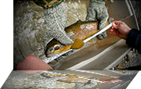
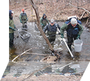
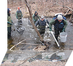

Main Header
Header Images

Header Logo
Header Images
 

References
Sites of Interest to the 'ConserFishinist'
Conversation
Carolinian Canada - Carolinian Canada’s diverse network advances a strategic ‘Big Picture’ vision for healthy landscapes and a green future in Canada’s deep south.
Friends of the Thames / Thames River Cleanup - The Friends of the Thames has been organising and promoting the Annual Thames River Cleanup every spring for the past 14 years.Environmentally concerned volunteers, landowners, clubs, organizations and municipalities have come together during Earth week to help clean up portions of the Thames River watershed areas.Check out their Contacts page to find out who or what organization is cleaning up your favourite section of the Thames River.
Nature London - Nature London undertakes a variety of projects to promote environmental awareness, enhance habitat and protect natural areas. MFN members participate in the Christmas Bird Count, the annual Butterfly Count and other initiatives which encourage the study of local natural history.
North Shore Steelhead Association - The primary concern of the founding members was the protection and enhancement of the north shore migratory Rainbow Trout (Steelhead) fishery, but their foresight led to the inclusion of all coldwater species in our constitution. This, by default, includes all species that use Lake Superior tributaries in their life cycle.
Ontario Streams - To promote the protection and rehabilitation of Ontario's rivers and streams through education and community action.
Ontario Federation of Anglers and Hunters - You may think you know who they are and what they do, but check the site, you may be surprised!
Conversation Authorities
- Ausable Bayfield Conservation Authority
- Credit Valley Conservation Authority
- Essex Region Conservation Authority
- Grand River Conservation Authority
- Halton Region Conservation Authority
- Hamilton Region Conservation Authority
- Long Point Region Conservation Authority
- Lakehead Region Conservation Authority
- Lower Thames Valley Conservation Authority
- Metro Toronto & Region Conservation Authority
- Rideau Valley Conservation Authority
- St.Clair Region Conservation Authority
- Upper Thames River Conservation Authority